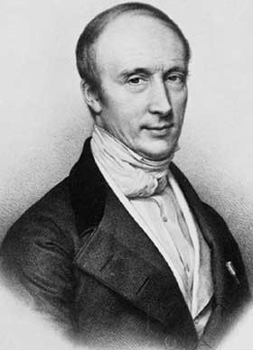

Обмеженість числової послідовності — це властивість послідовності, яка вказує на те, що всі її члени знаходяться в межах певного скінченного інтервалу, тобто не прямують до нескінченності.

У математиці функція f, визначена на деякій множині X з дійсними або комплексними значеннями, називається обмеженою, якщо множина її значень обмежена. Іншими словами, існує дійсне число M таке, що | f ( x ) | ≤ M {\displaystyle |f(x)|\leq M} для всіх x у X. Функція, яка не є обмеженою, називається необмеженою.
Якщо f є дійсним значенням і f ( x ) ≤ A для всіх x у X, тоді функція називається обмеженою зверху A. Якщо f ( x ) ≥ B для всіх x у X, то функція називається обмеженою знизу B. Дійсна функція обмежена тоді і лише тоді, коли вона обмежена зверху та знизу.
Важливим особливим випадком є обмежена послідовність, де X приймається як множина N натуральних чисел . Таким чином, послідовність f = ( a 0, a 1, a 2, ...) обмежена, якщо існує дійсне число M таке, що | a n | ≤ M {\displaystyle |a_{n}|\leq M} для кожного натурального числа n . Сукупність усіх обмежених послідовностей утворює простір послідовностей l ∞ {\displaystyle l^{\infty }}
Слабшим за обмеженість поняттям є поняття локальної обмеженості. Сімейство обмежених функцій може бути рівномірно обмеженим.
Обмежений оператор T : X → Y не є обмеженою функцією у значенні визначення цієї сторінки (якщо T = 0 ), але має слабшу властивість зберігати обмеженість: Обмежені множини M ⊆ X відображаються в обмежені множини T (M) ⊆ Y. Це визначення можна поширити на будь-яку функцію f : X → Y, якщо X і Y допускають поняття обмеженої множини. Обмеженість також можна визначити графічно.